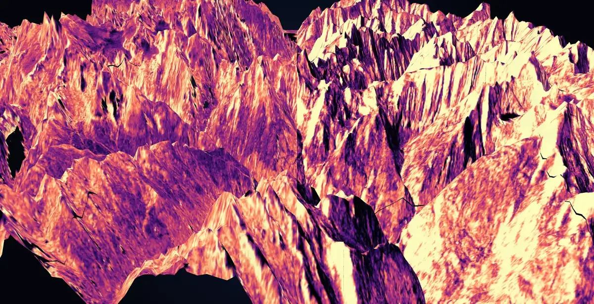

Sentinel-1 radar backscatter can be processed in the cloud with openEO on the Copernicus Data Space Ecosystem. This guide calibrates the same Sentinel-1 data in two ways, γ⁰ (gamma0, terrain-flattened) and σ⁰ (sigma0, ellipsoid), compares what each costs, and then compares the results on a map.
For beginners in openEO and SAR processing, we recommend carefully reading through the first sections and trying to understand the difference in output. For advanced users, the last two sections contain background and details on used methods and options to finetune the output.
Two ways to calibrate backscatter
Sentinel-1 GRD data is calibrated to backscatter in the sar_backscatter process. The coefficient argument decides how the signal is normalised:
sigma0-ellipsoid (σ⁰) normalises by the area on the ellipsoid. It needs no terrain flattening, so less processing is expected, but slopes facing the sensor look much brighter than slopes facing away from it.
gamma0-terrain (γ⁰) is radiometrically terrain-flattened. It needs an extra processing step, so more processing is expected, and it removes most of the slope-induced brightness differences.
We run both for exactly the same area and period, first compare their cost in terms of credits and resources, and then look at how the output differs. The example is in a mountain area, which results in highest processing cost and output difference. Expect smaller differences in more flat areas.
Monthly composites over six months
Instead of a single composite, we take six months of data (May to October 2026) and compute one median composite per month. The result has six dates per pixel, which allows us to look at pixel time series later on. Each composite is in decibel (10·log10) and resampled to Web Mercator (EPSG:3857) for visualization purposes.
The function below builds the monthly composite for a given backscatter coefficient, and exports the result to a workspace as a GeoTIFF per month and band, together with a STAC collection.
import openeofrom openeo import collection_propertyconnection = openeo.connect("openeo-staging.dataspace.copernicus.eu").authenticate_oidc()bbox = [1397574.0, 5935182.0, 1455819.0, 5999236.0]# Test area: 1/10 of each side, around the centre# bbox = [1423784.25, 5964006.3, 1429608.75, 5970412.7]extent =dict(zip(["west", "south", "east", "north"], bbox), crs="EPSG:3857")temporal_extent = ["2026-05-01", "2026-11-01"]def monthly_composite(coefficient: str, **backscatter_args):"""Monthly median backscatter composite in dB, in EPSG:3857 at 10 m. Extra arguments are passed on to `sar_backscatter`, see the advanced parameters below.""" cube = connection.load_collection("SENTINEL1_GRD", spatial_extent=extent, temporal_extent=temporal_extent, bands=["VV", "VH"], properties=[ collection_property("sat:orbit_state") =="ascending", collection_property("sar:instrument_mode") =="IW", ], ) cube = cube.sar_backscatter(coefficient=coefficient, **backscatter_args) cube = cube.aggregate_temporal_period("month", reducer="median") cube = cube.apply(lambda x: 10* x.log(base=10))return cube.resample_spatial(projection=3857, resolution=10)
Authenticated using refresh token.
Gamma0 (terrain-flattened)
We call the function defined above to compute the γ⁰ monthly composite. The openEO job metadata is visualized afterwards, to give you an idea on what you can expect.
gamma0 = monthly_composite("gamma0-terrain")
Sigma0 (ellipsoid)
The sigma0 workflow is identical, except for the coefficient and the target collection. For sigma0 we use implementation_version 3 of the backscatter processing, which is selected through the options of sar_backscatter.
For reference, the same sigma0 composite was also computed with the previous default implementation (implementation_version 2), so the cost of both versions can be compared below.
The batch job metadata contains the cost in credits and the resources that were used. To make the two jobs, and jobs of other sizes, easier to compare, the cost is also normalised per input megapixel and per 100 × 100 km output observation (one date over 10 000 km²).
γ⁰ terrain-flattened
σ⁰ ellipsoid (version 2)
σ⁰ ellipsoid (version 3)
Credits
29
28
12
Duration
806 seconds
804 seconds
352 seconds
CPU
7,644 cpu-seconds
7,410 cpu-seconds
2,376 cpu-seconds
Input
2,046 mega-pixel
2,340 mega-pixel
2,046 mega-pixel
Credits per input megapixel
0.0142
0.0120
0.0059
Output observations (area × dates, in 100 × 100 km units)
1.04
1.04
1.04
Credits per 100 × 100 km output observation
28.01
27.05
11.59
Change of version 3 vs version 2
credits -57%, duration -56%, CPU -68%, input -13%
The job produced 6 dates over 1,725 km², i.e. 6 × 0.173 = 1.04 observations of 100 × 100 km (10 000 km²), one observation being one date. Credits per observation = total credits / that number. The result is close to the total cost only because the number of dates and the fraction of 10 000 km² happen to nearly cancel out.
Comparing the results
Drag the slider to swipe between γ⁰ (left) and σ⁰ (right). Use the month selector to step through the six composites, and hover over the map to read both values and their difference.
Both products show the same scene, but they differ where the terrain is steep: with σ⁰, slopes that face the sensor are bright and slopes that face away are dark, which gives the image a relief-like look that is caused by the viewing geometry rather than by the land cover. γ⁰ removes most of this effect, so that surfaces with the same land cover get more similar values. On flat terrain, the two are nearly identical.
The data is loaded from the produced COG and rendered in 3D. Be aware that data loading may take time depending on your network connection.
Sentinel-1 backscatter
Advanced settings
Drag to rotate · scroll to zoom · Ctrl/⌘ + drag to tilt · hover for pixel values

Loading Sentinel-1 data…
Advanced parameters
Besides coefficient, the sar_backscatter process has a few more arguments, and the back-end accepts non-standard fine-tuning through the options dictionary. The defaults are what the examples above used.
argument
default
description
coefficient
"gamma0-terrain"
A value starting with gamma0 gives terrain-flattened γ⁰. Any other value gives σ⁰.
elevation_model
back-end default (COPERNICUS_30)
The DEM: "COPERNICUS_30", the URL of a STAC collection (https://<host>/<root>/collections/<id>) whose items hold the DEM rasters, or the string "null" for no DEM (terrain height 0 m).
mask
False
Also mask shadow and layover pixels.
noise_removal
True
Not yet supported by the terrain-correction back-end; currently ignored.
options
{}
Non-standard options, see below.
These options are supported but are not considered part of the stable API and are subject to change without prior notice::
option
default
description
dem_asset
"data"
Asset key of the DEM raster in the items of a STAC elevation_model collection.
cast_shadow
True
Also mask pixels in cast shadow.
rtc_algorithm
"auto"
Terrain-flattening algorithm for γ⁰: angle, bilinear_distribution or auto (see below). Also settable as a back-end default with the S1_RTC_ALGORITHM environment variable.
rtc_dem_upsampling
2
Number of DEM facets per output pixel, per axis (area-based algorithm only).
rtc_dem_margin_pixels
20
DEM margin around each tile, in output pixels (area-based algorithm only).
rtc_min_value_db
none
Pixels with a normalisation factor below this value, in dB, become NaN (area-based algorithm only).
rtc_auto_min_local_incidence
20
Degrees. With auto, pixels below this local incidence angle count as steep.
rtc_auto_max_local_incidence
70
Degrees. With auto, pixels above this local incidence angle count as steep.
rtc_auto_dilation_pixels
2
With auto, the neighbourhood around steep pixels that is also computed area-based.
rtc_auto_tile_fraction
0.02
With auto, the fraction of steep pixels above which the whole tile is computed area-based.
rtc_method_band
False
Add a band with the algorithm used per pixel (0 = angle, 1 = area-based). Useful to see where auto switched.
The arguments and options are set directly on sar_backscatter, which monthly_composite() passes them on to. This example computes γ⁰ with a custom steepness range for the auto algorithm and with the shadow and layover mask:
To trade accuracy for cost, force the cheaper algorithm for all pixels with options={"rtc_algorithm": "angle"}, or the accurate and more expensive one with options={"rtc_algorithm": "bilinear_distribution"}.
Note that local_incidence_angle=True, ellipsoid_incidence_angle=True and rtc_method_band add extra bands to the result. monthly_composite() converts all bands to decibel, so for those options, only apply the 10·log10 conversion to the backscatter bands.
Underlying implementation
The back-end computes sar_backscatter for Sentinel-1 GRD with the sar-terrain-correction module of openeo-geotrellis-extensions.
Elevation model. The DEM is selected with elevation_model. Height is 0 m where no item exists (sea, coast) or the DEM has no data. A bundled EGM96 geoid is applied to convert to ellipsoidal heights.
Terrain flattening (gamma0) algorithms
For coefficient="gamma0-terrain", the rtc_algorithm option selects how σ⁰ is flattened. σ⁰ itself is not affected.
rtc_algorithm
method
cost
angle
Per pixel σ⁰ · tan θ_loc / sin θ_el, from the DEM-derived local incidence angle (Vollrath et al. 2020, after Ulander 1996 and Hoekman & Reiche 2015).
low
bilinear_distribution
Area-based: DEM facets are projected into radar geometry and their gamma area is summed per radar pixel, so that γ⁰ = β⁰ / ANF with β⁰ from the betaNought calibration LUT. A port of ISCE3 computeRtcBilinearDistribution, the method of Small (2011) as used by OPERA RTC-S1. Accurate on steep slopes and in layover.
high, about 10–20× the geometry work of angle
auto (default)
Per tile: if no pixel is steep (local incidence angle outside the min/max range), only angle is used. If at least rtc_auto_tile_fraction of the pixels are steep, the whole tile is area-based. Otherwise the area-based method is used only for the steep pixels and their neighbourhood, and angle elsewhere.
in between
Memory. A tile computation is limited to about 512 MB of executor memory. Larger tiles are computed in blocks that each stay within this limit, and are assembled into the requested tile. With auto, the algorithm is chosen per block.
References
Vollrath, A., Mullissa, A., Reiche, J. (2020). Angular-Based Radiometric Slope Correction for Sentinel-1 on Google Earth Engine. Remote Sensing 12(11), 1867. doi:10.3390/rs12111867
Hoekman, D.H., Reiche, J. (2015). Multi-model radiometric slope correction of SAR images of complex terrain using a two-stage semi-empirical approach. Remote Sensing of Environment 156, 1–10. doi:10.1016/j.rse.2014.08.037